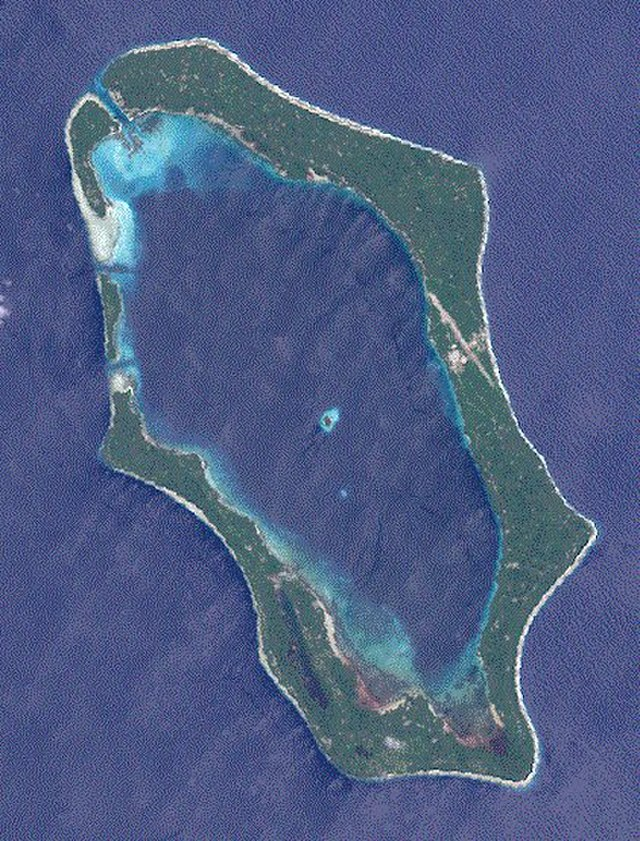
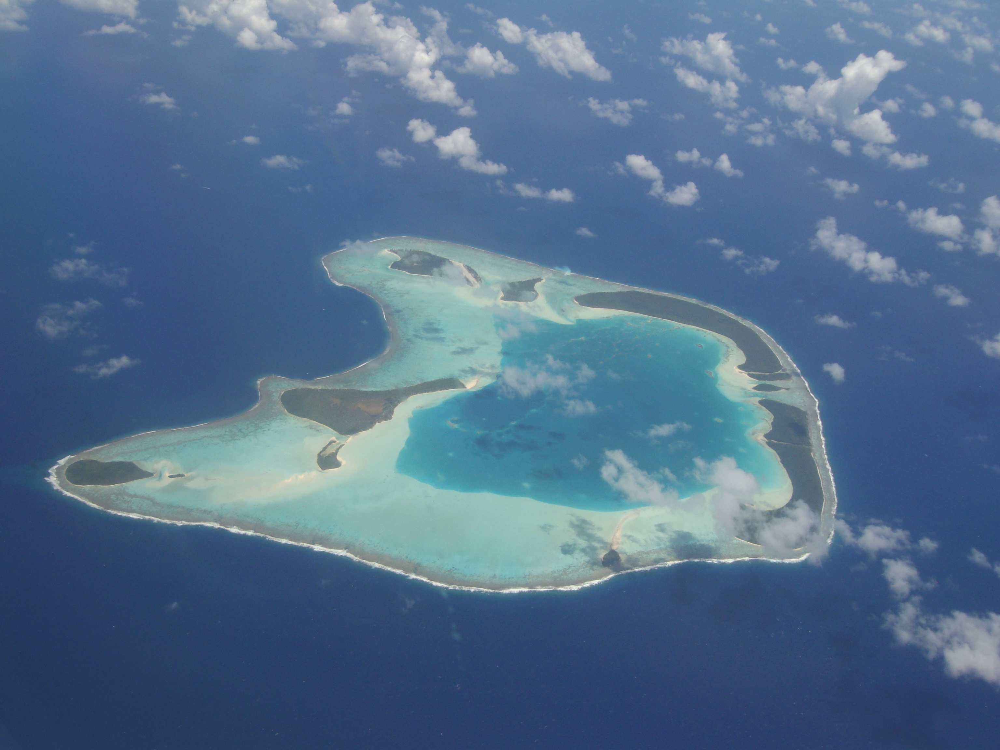
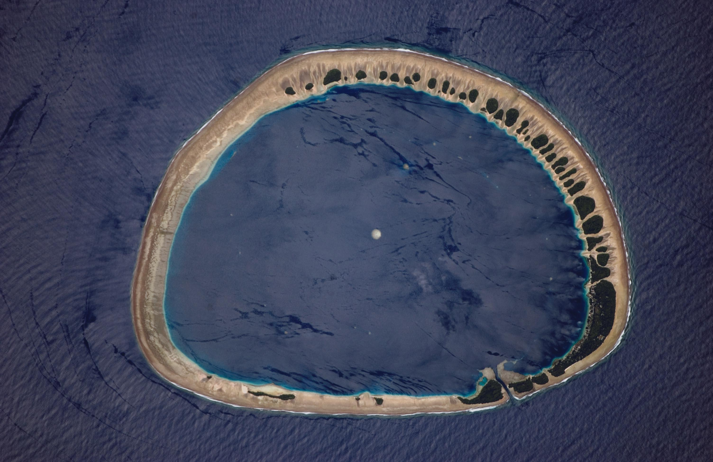
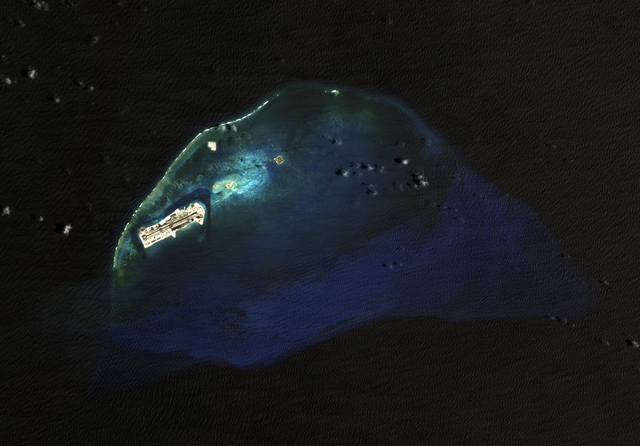

Atoll Collection
Learn about some of the atolls across the world.

Nissan Atoll is an atoll located in the green islands, a set of islands managed by Papua New Guinea.
See map Information Source Image Source
Tetiaroa Atoll is an atoll located in French Polynesia, which itself is located in the Pacific Ocean.
Show Map Info Source Image Source

Johnston Atoll is an atoll located in the pacific ocean that administered by the United States. It was once used by the U.S military but is now a wildlife refuge.
See map Information Source Image Source